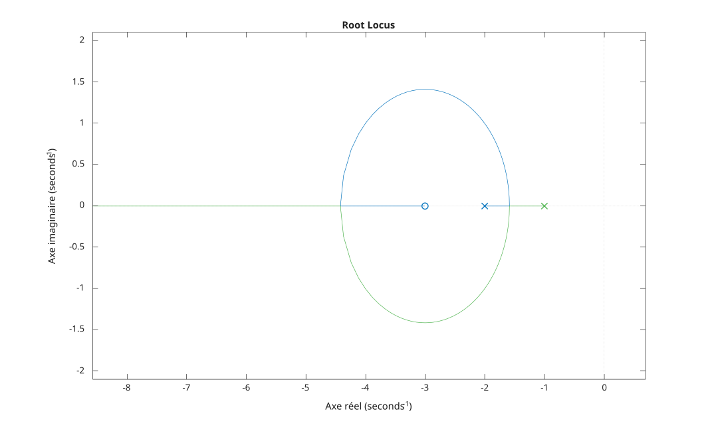

rlocus(sys)
rlocus(sys, k)
rlocus(sys1, sys2, ...)
[r, k] = rlocus(sys)
[r, k] = rlocus(sys, k)
| Paramètre | Description |
|---|---|
| sys | Système dynamique SISO |
| k | Vecteur des gains de contre-réaction |
| Paramètre | Description |
|---|---|
| r | Positions complexes des pôles en boucle fermée, une colonne par gain |
| k | Vecteur des gains utilisés |
La fonction du lieu des racines, rlocus(sys), calcule et trace le lieu des pôles en boucle fermée de la boucle feedback(k*sys, 1), c'est-à-dire les racines de den + k*num, lorsque le gain k varie de 0 à l'infini.
Chaque branche part d'un pôle en boucle ouverte (marqué x) pour k = 0 et se termine sur un zéro fini en boucle ouverte (marqué o) ou tend vers l'infini lorsque k augmente.
Lorsqu'un vecteur de gains k est fourni, ces gains sont utilisés à la place de la plage sélectionnée automatiquement.
Avec des arguments de sortie, [r, k] = rlocus(sys) renvoie les positions des pôles en boucle fermée et les gains sans tracer.
f = figure();
sys = tf([1 3], [1 3 2]);
rlocus(sys);
G = tf(1, [1 3 2]);
[r, k] = rlocus(G);| Version | Description |
|---|---|
| 1.0.0 | initial version |